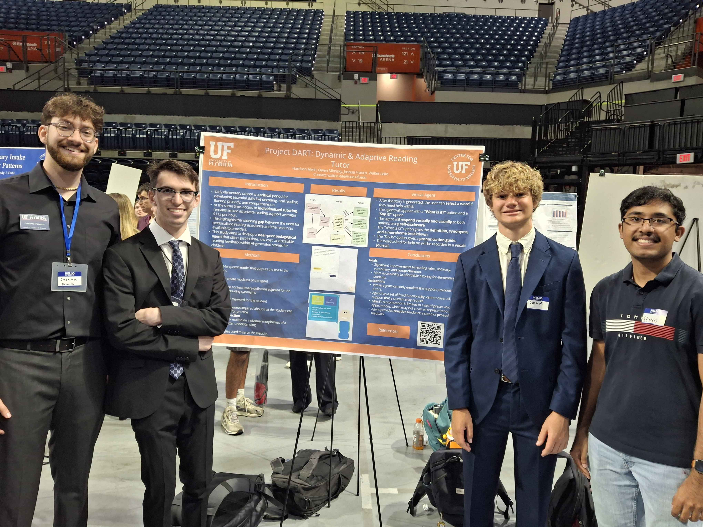

RELEVANT COURSEWORK
Dual Enrollment
- CGS2545C - Database Management
- COP2830 - Web Programming
Fall 2024
- COP3504C - Advanced Programming Fundamentals
Spring 2025
- CDA3101 - Introduction to Computer Organization
- CIS4930 - Introduction to Machine Learning
- COP3530 - Data Structures/Algorithms
- EDF3935 - Generative AI for Education
Fall 2025
- CAP4641 - Natural Language Processing
- CEN3031 - Introduction to Software Engineering
- COP4600 - Operating Systems
Spring 2026
- CIS4930 - Introduction to Competitive Programming
RESEARCH
Virtual Learning Lab
Project DART: Dynamic & Adaptive Reading Tutor
- Spring 2026 - Present
- Research Assistant for CURE class "EDF3935 - Generative AI for Education"
- Mentored team of three to develop a single-role pedagogical agent that supports K-2 students in creating and reading AI-generated stories
Project InSPIRE: Intelligent Support for Personalized Individual Reading Experiences
- Spring 2025 - Fall 2026
- CURE student in "EDF3935 - Generative AI for Education"
- Created support for early readers by virtualizing Elkonin boxes
PHOTOS


JOURNAL
Year 1 Spring
I am glad to say that I survived my first semester at the University of Florida!
For my first semester, I decided to not take too demanding of a courseload as I would be adjusting to the new
college environment. However, I still decided to sprinkle in some Honors classes to provide some challenge and
insight into the program. I found the Research & Creativity class to be very helpful in providing me
with information on URSP and how to get involved in research. Overall, I was able to succeed in my classes and set
myself up for strong future semesters.
I also got involved in a few clubs in my first semester. I joined Software Engineering Club, Association for
Computing Machinery, and Real World Engineering. These clubs helped with my professional development and provided me
with insight into my future career.
As for the social aspect, I was able to meet a lot of new people and make some great friends. Although I was
originally nervous about this, I was able to find a great group of friends that I can rely on.
All in all, I am excited to see what the future holds for me at the University of Florida!